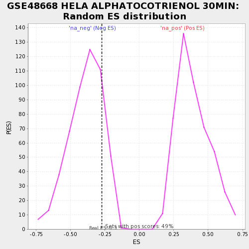

| | | Dataset | testA |
| Phenotype | NoPhenotypeAvailable |
| Upregulated in class | na_neg |
| GeneSet | GSE48668 HELA ALPHATOCOTRIENOL 30MIN |
| Enrichment Score (ES) | -0.2741282 |
| Normalized Enrichment Score (NES) | -0.70245135 |
| Nominal p-value | 0.8031189 |
| FDR q-value | 1.0 |
| FWER p-Value | 1.0 |
Table: GSEA Results Summary
 Fig 1: Enrichment plot: GSE48668 HELA ALPHATOCOTRIENOL 30MIN
Fig 1: Enrichment plot: GSE48668 HELA ALPHATOCOTRIENOL 30MIN
Profile of the Running ES Score & Positions of GeneSet Members on the Rank Ordered List
| PROBE | GENE SYMBOL | GENE_TITLE | RANK IN GENE LIST | RANK METRIC SCORE | RUNNING ES | CORE ENRICHMENT | | 1 | FRMPD1 | | | 3 | 2.622 | 0.1649 | Yes |
| 2 | ACAP1 | | | 15 | 1.812 | 0.0759 | No |
| 3 | ENPP5 | | | 30 | -1.943 | -0.0696 | No |
| 4 | DLG2 | | | 40 | -2.332 | -0.0669 | No |
| 5 | ANKAR | | | 44 | -2.542 | 0.0909 | No |
Table: GSEA details [plain text format]

Fig 2: GSE48668 HELA ALPHATOCOTRIENOL 30MIN: Random ES distribution
Gene set null distribution of ES for GSE48668 HELA ALPHATOCOTRIENOL 30MIN